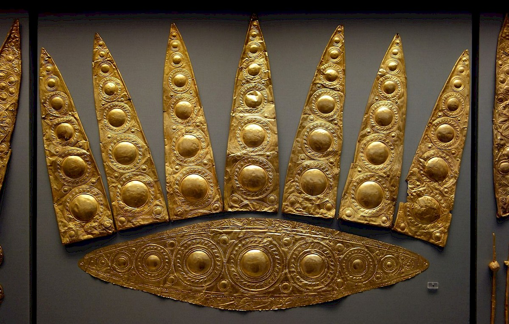

Opakování I. – cv. 1. až 5.
1.
1. Ὁ δοῦλος τῷ ἀδελφῷ δῶρον παρὰ τοῦ φίλου φέρει. 2.a) Τὸ δένδρον γιγνώσκεται ἐκ τῶν καρπῶν. 2.b) Τὰ δένδρα γιγνώσκεται ἐκ τῶν καρπῶν. 3.a) Τὰ φάρμακα ὑπὸ τοῦ ἰατροῦ παρασκευάζεται. 3.b) Ὁ ἰατρὸς τὰ φάρμακα παρασκευάζεται. 4. Πολλάκις καὶ τὰ τῶν τέκνων ἔργα ϑαυμάζομεν. 5. Τὸ
μὲν ἀγαϑὸν δένδρον ἀγαϑοὺς φέρει καρπούς, τὸ δὲ πονηρὸν πονηρούς. 6. Πιστεύομεν τῷ στρατηγῷ· τὰ γὰρ ἱερὰ καλά ἐστιν. 7. Ὅσιοι λόγοι ἄνευ ὁσίων ἔργων τοῖς ϑεοῖς οὐ φίλοι εἰσίν. 8. Χαλεπὰ τὰ καλά. 9. Κοινὰ τὰ τῶν φίλων.
παρά (s gen.) – od
ἀδελφός, -οῦ, ὁ – bratr
φέρω, -ειν – nesu
δένδρον, -ου, τό – strom
γιγνώσκω, -ειν – poznávám
ἐκ (s gen.) – od
καρπός, -οῦ, ὁ – plod, ovoce
φάρμακον, -ου, τό – jed, lék
ἰατρός, -οῦ, ὁ – lékař
παρασκευάζω, -ειν – připravuji
πολλάκις – často
ἔργον, -ου, τό – čin
θαυμάζω, -ειν – obdivuji
ἀγαθός, -όν – dobrý
πονηρός, -όν – zlý
πιστεύω, -ειν – věřím
στρατηγός, -οῦ, ὁ – stratég
γάρ – totiž
ἱερά, -ῶν, τά – oběť
καλός, -όν – dobrý, krásný
ὅσιος, -ον – zbožný
λόγος, -ου, ὁ – slovo, řeč
θεός, -οῦ, ὁ – bůh
ἄνευ (s gen.) – bez
φίλος, -ον – milý, přátelský
χαλεπός, -όν - náročný
κοινός, -όν – společný
2.
1. Τὸ ἄστρον ἐν τῷ οὐρανῷ λάμπει. 2. Τὰ ἄστρα πολλάκις τοῖς ἀνθρώποις οὐ λάμπει. 3. Τοῖς τόξοις τὰ ϑηρία ϑηρεύομεν. 4. Πολλὰ ϑηρία τοὺς ἀνθρώπους φεύγει. 5. Πολλάκις καὶ τὰ τῶν παιδίων ἔργα ϑαυμάζομεν. 6. Λαμπρὰ δῶρα τὰ παιδία μάλα εὐφραίνει. 7. Πολλὰ ἔργα χαλεπά ἐστιν. Ἀλλὰ καὶ ἐν τοῖς χαλεποῖς τοῦ βίου πόνοις ϑεῷ ἀεὶ πίστευε (πιστεύετε)! 8. Ὦ ϑεός (Ὦ ϑεοί), σῷζε (σῴζετε) τοὺς ἀνθρώπους! 9. Φίλιππος φίλος Ἀλεξάνδρου ἦν. Φίλιππος καὶ Ἀλέξανδρος φίλοι ἦσαν. 10. Ἐv τῷ ἱερῷ ὑψηλὰ δένδρα ἦν.
ἄστρον, -ου, τό – hvězda
οὐρανός, -ου, ὁ – obloha
ἐν (+ dat.) – v
λάμπω, -ειν – zářím
τόξον, -ου, τό – luk (ř. dat. ~ český instrumentál)
θηρίον, -ου, τό – zvíře
θηρεύω, -ειν – lovím
λαμπρός, -όν – skvělý, zářivý
παιδίον, -ου, τό – dítě
μάλα – velmi
εὐφραίνω, -ειν – těším
ἀλλά – ale
βίος, -ου, ὁ – život
πολλά - nom. pl. neut. mnoho
πόνος, -ου, ὁ – námaha
σῴζω, -ειν – zachraňuji
ἦν – byl, byla, bylo
ἦσαν – byli, byly, byla
ἱερόν, -οῦ, τό – chrám, chrámový obvod
ὑψηλός, -όν – vysoký

Eliptický diadém z Mykén, asi 1600-1500 p. n. l.